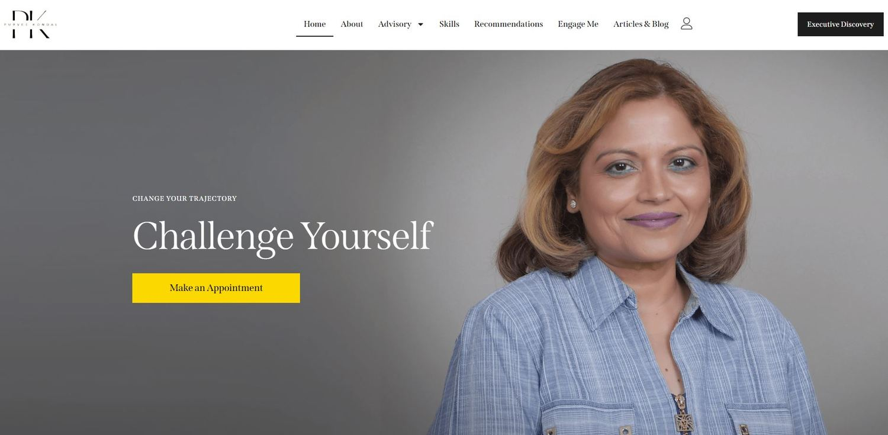
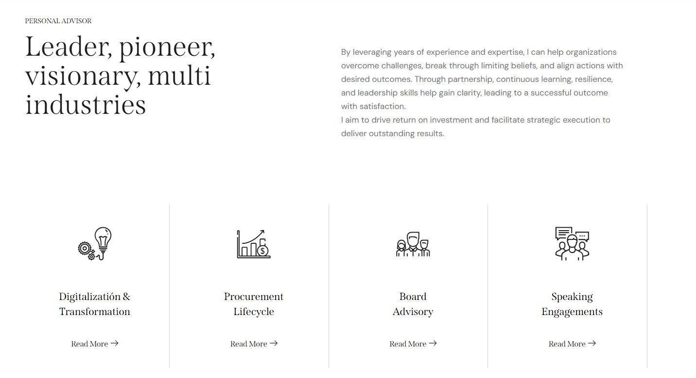
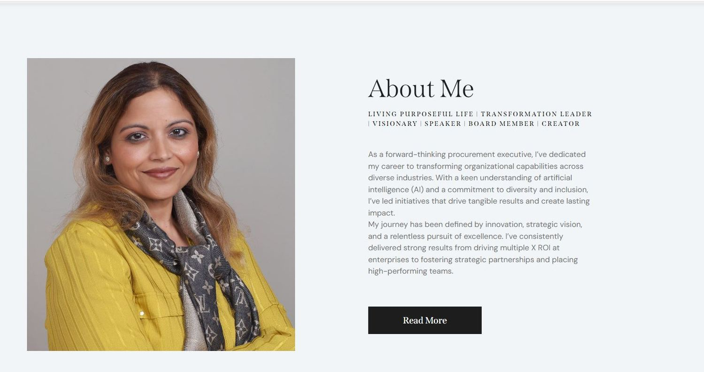

Work
The record, with the screenshots.
Four mandates in detail. Numbers are actual results unless a line says otherwise. Where a client is still active and unnamed, the industry and geography are real and the brand is withheld.
Tinova Agency, 2025 to present
Acting head of marketing
A brand and growth agency selling investor readiness to pre seed founders. I run marketing for the agency itself and for its client accounts, and work the outbound pipeline with them, refining the messaging and the way leads are delivered.
Positioning came first
The agency was being read as a deck shop. That is a commodity market with no pricing power. I rebuilt the offer narrative around founder readiness and investor confidence instead of design deliverables, so the conversation moves from what a founder receives to what a founder is able to do afterwards.
The flagship offer runs as a fixed sprint for founders raising a seed round. I wrote the positioning, the sales narrative, the diagnostic assets and the campaign that carries it.
Then the demand engine
Research led demand generation, the same method that worked at Xgrid. Interviews with founders and investors get synthesised into a formal quarterly report that doubles as an authority asset and a lead warming tool. Everything else feeds off it: LinkedIn content on the agency page and the founder profile, short form video, blog content for search, weekly email to the warmed list, and a downloadable diagnostic each week.
The operating system I run
These are the cadences and targets the function is built to, agreed with the CEO and reviewed weekly. They describe the machine, not a claim about outcomes already banked.
Agency demand generation
- Weekly email campaign to the warmed list, covering 70 to 90 percent of the list each month
- Four LinkedIn posts a week on the company page, plus five a week on the founder and advocacy profiles
- One new lead generation asset a week, diagnostics and scored self assessments rather than generic guides
- Helping the CEO build brand authority and attract the right kind of organic leads through her own profile, Tino's profile
- Engagement programme on founder and investor accounts, run to a documented comment framework so the agency voice stays consistent
Weekly KPI update and a monthly performance review against every line above.
Client marketing
- Strategy and KPI alignment per account, then a monthly content calendar built against it
- Campaign briefs, 10 to 30 ad copy variations per campaign, and creative coordination with designers
- Blogs, SEO content, email and nurture copy sized to each account's scope
- Weekly performance tracking with blockers documented, monthly client report, and a running list of improvement actions
Accounts across homecare, financial services, recruitment and early stage startups.
Xgrid, March 2023 to December 2024
A pipeline built out of 123 conversations.
Enterprise SaaS and services. I joined as a copywriter and was promoted to marketing strategist, with the role overlapping directly into outbound. I worked two campaigns, B2B SaaS and marketing automation, and owned the output that carried them: research, ad creative, partnership decks and campaign landing pages.
The method
Instead of writing at the market, I interviewed it. 123 C level executives from Adobe, Twilio and Fortune 500 companies, asked about the operational pain nobody writes case studies about. Those conversations produced four industry research reports and a 300 article SEO programme, and the interviews themselves warmed the exact accounts the sales motion needed.
That is the part most content strategies skip. The research was the lead generation. By the time a report shipped, the people quoted in it already knew who we were.
The full cycle
I ran the motion end to end: ICP identification, LinkedIn engagement, meeting booking, qualification, proposal support and close. A 5,000 contact list was segmented for automated outbound across LinkedIn, Slack communities and email.
Alongside it, 30 plus enterprise case studies and executive narratives for Alkira, USIS and OKFB, an extended enterprise contract off the back of performance reporting, and messaging alignment work with product, sales and engineering across Kubernetes, cloud and marketing automation lines.
The wider output
The reports and the whitepaper were the spine of the programme. They were not all of it. Concept, copy and outline on everything below were mine, built out with the design and animation team and taken through senior review before release.
Ad copy and creative
Social and campaign creative for the SaaS and marketing automation lines, written against the same operational pain the interviews kept surfacing.


C level reports
The sequence was deliberate. Validate the concept against the market, run the interviews, build the report with the designers, then book meetings with the people who read it. Two of us ran all of it.


Partnership decks
Built to open partnership conversations and show the depth behind the pitch. Concept, outline and final design carried through to delivery.


Campaign landing pages
Two campaigns ran in parallel. One sold a plug in marketing team to early stage B2B SaaS. The other sold marketing automation services, Marketo in particular. I wrote the collateral and ran the outreach on both.


A few samples of the work, linked in full.
- Whitepaper: HubSpot to Marketo migration guidexgrid.co
- C level report: Ultimate Marketo MasteryPDF
- Webinar: which attribution model to use in Marketoxgrid.co
- Webinar: the right attribution model for B2B and B2Cxgrid.co
- Webinar: data hygiene and the data privacy mazexgrid.co
- Article: choosing martech that actually worksLinkedIn
- The interview programme in publicLinkedIn
- Customer testimonial video, AlkiraVideo
- Motion showreelVideo
DieselGeeks, 10 months
80x organic revenue in an automotive parts store.
An Australian diesel performance parts retailer with a working checkout, no inventory visibility online, and two or three orders a month coming from the site.
What was actually broken
The store was not underperforming because of messaging. It was invisible. Product pages were thin and unstructured, there was no inventory logic a buyer could follow, and nothing on the site answered the questions a person asks before spending four figures on a build.
Fixing that meant treating product architecture as a marketing problem, not a web problem: vehicle led navigation, product pages written for the specific search a builder runs, and blog content that catches people earlier in the decision.
How it was run
I built the ClickUp workflows for content pipelines, product pages and campaigns, and served as the single point of contact between the client and the internal team across three to four concurrent projects. SEO audits, keyword research and technical fixes ran alongside email sequences and trade partnership content.
The delivery record extended the contract and expanded scope into a separate build.


Drag the frame, or use the slider and arrow keys. The before state is not a design choice gone wrong. The live domain was serving an unedited starter template, architecture copy and all.


CertBetter and brand development
Sites that were not finished, finished.
Brand strategy and rebuild work where the website was the bottleneck and the content system was the thing missing behind it.
CertBetter
A SaaS platform in the niche ISO and project management certification space. It started as a blogging site attached to a solo founder profile with negligible reach.
I built the organic growth strategy for the second version of the platform: referral mechanics, community features, UI and UX priorities, and a content system for PMP, PMI and ISO audiences that the founder could run himself. I also facilitated CEO level meetings with warmed contacts, which opened partnership and community conversations.
It moved from a blog to a platform where ISO professionals sign up and get matched, and from a quiet profile to workshops attended by professionals across the industry.


Drag the frame, or use the slider and arrow keys.


ITHatch


Drag the frame, or use the slider and arrow keys.


Neptrix
From a half built, non functional site to a working platform.


Drag the frame, or use the slider and arrow keys.


UK cycling retailer
From a basic brochure site to a working e-commerce store.


Drag the frame, or use the slider and arrow keys.




Client campaigns, B2C
Homecare and financial services.
Small service businesses where the buyer is emotional, the decision is urgent, and the money is wasted somewhere between the click and the phone call. Brands withheld while the accounts are live.
Homecare, US agencies
Meta campaigns for in home senior care across several US markets. The recurring finding across every account was the same: the ads were not the problem. Leads were arriving and dying in the handoff, because nobody called within the window a worried adult child will wait.
So the funnel got shorter. Direct booking and instant forms outperformed landing pages, a mismatch between a soft call to action and a quiz style page was killing intent, and the creative moved from service description to the specific moment a family decides it cannot cope alone.
Financial services and insurance
Funnel design, landing pages and ad copy for independent advisors and agency owners. The work included product level market research, including an evaluation of five financial and insurance products against a retirement benchmark to identify which one deserved campaign budget.
The output is plain declarative copy. In a category built on fear and jargon, the ad that names the situation in the prospect's own words beats the ad that sounds like a brochure.


The short version
This is the part above the water.
Everything on this page is what fits on a page. The rest comes out in a conversation.